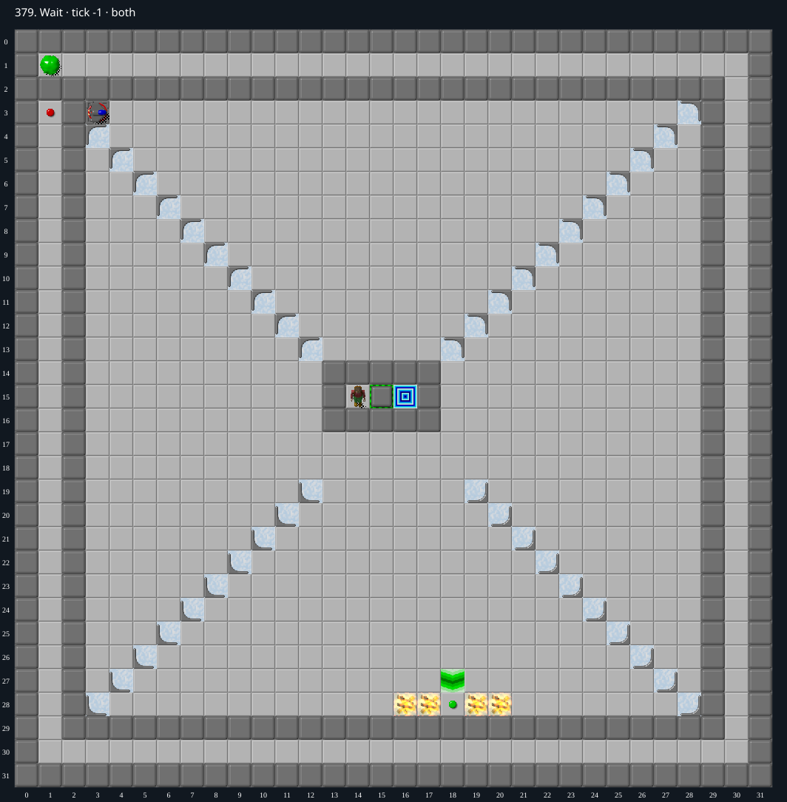

Jacques · Original Tile World MS
379. Wait
Impossibility argumentEvery released glider follows a fixed route into fire before reaching the green button.
0 chips required · No time limit
Why completion is impossible
- Chip starts enclosed at (14, 15) with Walls on three sides and closed toggle (15, 15) on the east. The only exit is (16, 15). The only green button is (18, 28).
- The outside blob is separated from the inner glider chamber by permanent Walls. It can activate red button (1, 3), wired to east-facing glider cloner (3, 3), but cannot itself reach the green button.
- An unobstructed glider follows the straight eastward row 3 to southwest ice corner (28, 3), turns south along column 28 to northwest ice corner (28, 28), then turns west and enters Fire (20, 28). Gliders die on fire. The green button at (18, 28) is two cells farther west.
- The blob moves at most once each 8 ticks on its ordinary-floor circuit. Each new activation requires leaving and re-entering the red button, so clone launches are at least 16 ticks apart. Along the fixed glider route each tile occupancy lasts at most 4 ticks, with ice transitions faster. Identical launches separated by 16 ticks cannot meet or block one another.
- By induction, every successfully released glider follows that same unobstructed route and dies at (20, 28). No clone can turn inward toward the green button. Chip cannot affect either external route while enclosed.
- Consequently no actor ever activates green; the toggle remains closed, preserving Chip enclosure and making the exit unreachable.
Inspect both layers
The main map shows the initial runtime state. Switch to the buried layer to inspect hidden terrain and items. Hover coordinates are also available in the downloadable SVG.


Recorded checks and attempts
- DAT two-layer inventory: Exact DAT metadata/layers decoded; initial production runtime loaded and rendered with repository sprites.
- bounded live simulation: playing at tick 19999; Chip remains (14, 15); one active blob; not a proof
Scope and limitations
- Ordinary legal MS play, with no cheats or edits.
Evidence
- Structured report
- web/src/ruleset-ms/impl/builtinLevelRegistration.ts
- legacy_c/mslogic.c:1002-1011 (bounded cardinal movement)
- legacy_c/mslogic.c:1034-1042 (socket/key requirements)
- legacy_c/mslogic.c:1616-1736 (arrival/terrain effects)
- legacy_c/mslogic.c:1825-1832 (exit completion)
- web/src/ruleset-ms/impl/chipMovement.ts:104-108 (TypeScript completion)
- legacy_c/mslogic.c:1128-1137 (normal blob cadence)
- legacy_c/mslogic.c:1204-1209 (glider direction preference)
- legacy_c/mslogic.c:412-425 (ice turns)
- legacy_c/mslogic.c:1720-1724 (glider dies on fire)
- legacy_c/mslogic.c:1787-1797 (red button activated on arrival)